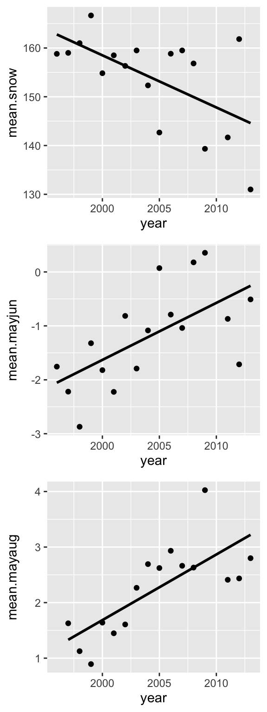
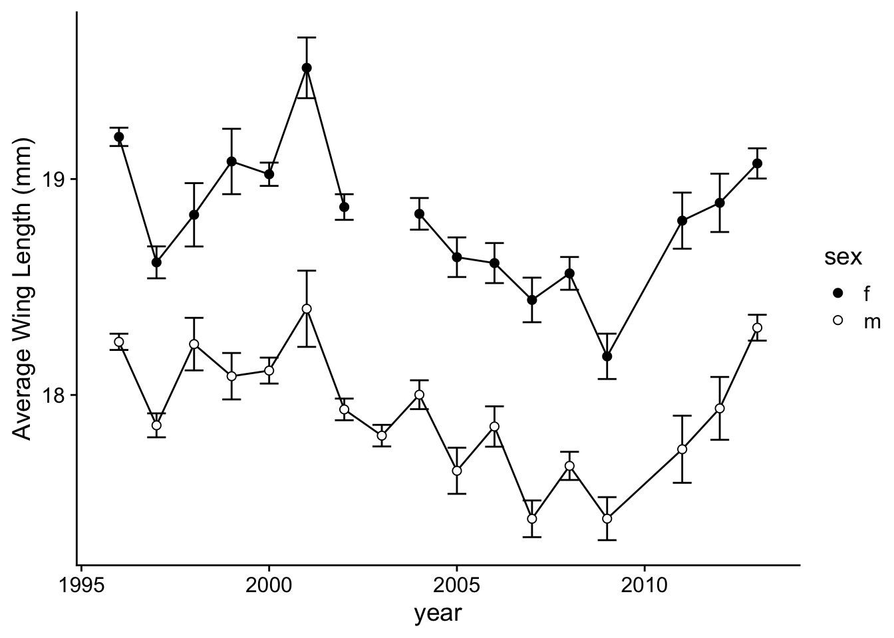
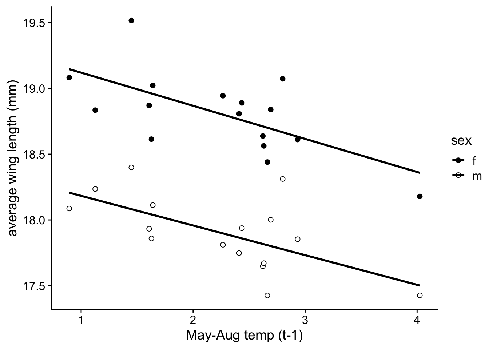
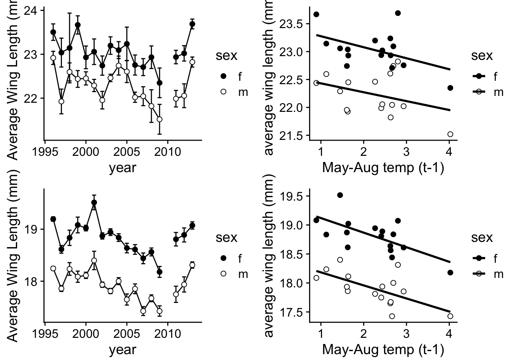

Worked Example: Plotting the change in butterfly size with climate change
Dai Shizuka
updated 11/15/22
Things you will learn in this module:
- More tricks to plotting
- Using publicly available datasets
- Implementing a simple statistical analysis (simple linear regression)
- Creating a simple custom function
- Repeating a routine with a custom function
5.1 Using data associated with published papers
Today, we will learn a bit more about plots by trying to re-create a plot from a recent publication. I find playing with open-access data and re-creating analyses & figures to be a very fruitful exercise because you get to learn codes, but you also get to really understand the studies much better.
For this exercise, I have chosen a paper by Bowden et al. (2015) in Biology Letters.1 This study used a 17-year dataset on wing lengths of two butterfly species in Greenland to show that both species follow the “temperature-size” rule, which posits that higher temperatures generally select for smaller adult body size.

Boloria chariclea and Colias hecla
Aside from it being an interesting story, I chose this paper as an example for several reasons. First, the data are pretty straightforward–wing lengths of individuals, sex of individuals, and a few climatic data such as snowmelt day, average spring temperature and average spring/summer temperature of the previous year. More importantly, the authors made the raw data publicly available through the Dryad data repoistory (datadryad.org). Here is the link to the raw data for this particular study: http://dx.doi.org/10.5061/dryad.43gt3 (you can find this information under “Data accessibility”, right before References).
You can see that there is a link to an excel file (in .xlsx format) that contains the wing length data. In this case, there is no associated readme file (though it is encouraged by Dryad to include one), but the data are self-explanatory enough. Go ahead and download the data file and open it in Microsoft Excel.
What you will see is a single worksheet with both species data. For each species, there are 9 columns: year, site, sex, WL (wing length), DOY (day of year of capture), snow (day of snowmelt), snow.1 (day of snowmelt in the previous year), mayjun (average May-June temperature), mayaug.1 (Average May-Aug temperature of previous year).
Now, since R will have a hard time reading this data, let’s manually create two separate data files and save them as .csv files. Follow these directions:
- Select and copy the 9 columns of data for Boloria chariclea
- Open a New Workbook (command-N) and paste the data
- Save the file as “boloria.csv” in your folder for this week.
- Do the same for Colias hecla, and save that file as “colias.csv”
Now, let’s import these data to R:
#import the data
boloria=read.csv("data/boloria.csv")
colias=read.csv("data/colias.csv")
head(boloria) #look at one of the dataframes## year site sex WL DOY snow snow.1 mayjun mayaug.1
## 1 1996 2 m 17.56 189 158.8 NA -1.7558 NA
## 2 1996 2 m 17.91 189 158.8 NA -1.7558 NA
## 3 1996 2 m 17.29 189 158.8 NA -1.7558 NA
## 4 1996 2 f 19.26 196 158.8 NA -1.7558 NA
## 5 1996 2 m 18.82 196 158.8 NA -1.7558 NA
## 6 1996 2 m 17.83 196 158.8 NA -1.7558 NALet’s also load the R packages we will use:
library(tidyverse)
library(cowplot)Now, we can proceed with our exercise.
5.2 Recreating Figure 1: Scatterplot with fit line
The first thing we will try is to re-create Figure 1, which has three panels and shows how the snowmelt dat, average May-June temperature, and average May-August temperature (of the previous year) has changed across the study period. They present this as a scatterplot and a simple linear regression fit line.

Figure 1 from Bowden et al. (2015): (a) Timing of snowmelt (\(F_{1,16}\) = 8.92, estimate = -1.05, \(R^2_{Adj}\) = 0.32, \(p\) < 0.008), (b) \(May-June_t\) temperature (\(F_{1,16}\) = 10.87, estimate = 0.11, \(R^2_{Adj}\) = 0.37, \(p\) < 0.005) and (c) \(May-June_{t-1}\) temperature (\(F_{1,16}\) = 22.52, estimate = 0.11, \(R^2_{Adj}\) = 0.56, \(p\) < 0.001) from 1996-2013 at Zackenberg, Greenland
Alright, let’s try to re-create this!
5.2.1 Multi-panel scatterplot using ggplot and cowplot
First thing we’ll do is re-create the scatterplot of Figure 1a: The date of snowmelt by year. Close reading of the supplemental methods section tells us that this is the first day of the year that less than 50% of the site was covered in snow.
The dataset we have downloaded is organized by individual butterflies that were caught during the study. However, the snowmelt and temperature information are the same for all rows for a given year (and this info is the same for both species of butterfly).
So we can actually extract all of the information we need for this
figure from this data. All we need to do is to group the data by
year and summarize the snowmelt and
temperature data for each year by taking the mean. To do this, we will
can use the group_by() and summarize()
functions in the dplyr package (included in the
tidyverse package we loaded).
Let’s use this to create a dataframe that has all of the information we need: year, average snowmelt day, average May-June temperature of that year, and average May-August temperature of the previous year:
year.dat=boloria %>% group_by(year) %>% summarise(mean.snow=mean(snow), mean.mayjun=mean(mayjun), mean.mayaug=mean(mayaug.1))
year.dat## # A tibble: 17 × 4
## year mean.snow mean.mayjun mean.mayaug
## <int> <dbl> <dbl> <dbl>
## 1 1996 159. -1.76 NA
## 2 1997 159 -2.22 1.63
## 3 1998 161 -2.87 1.13
## 4 1999 167. -1.32 0.894
## 5 2000 155. -1.82 1.64
## 6 2001 158. -2.22 1.45
## 7 2002 156. -0.815 1.61
## 8 2003 160. -1.79 2.27
## 9 2004 152. -1.08 2.69
## 10 2005 143. 0.0715 2.62
## 11 2006 159. -0.790 2.93
## 12 2007 160. -1.04 2.66
## 13 2008 157. 0.178 2.63
## 14 2009 139. 0.355 4.02
## 15 2011 142. -0.870 2.41
## 16 2012 162. -1.71 2.44
## 17 2013 131 -0.509 2.80Let’s try plotting on of the panels of Figure 1 here using this data. Here is the plot for average snowmelt date across years.
p1=ggplot(year.dat, aes(x=year, y=mean.snow)) +
geom_point()
p1In ggplot, it’s also easy to add the simple linear regression line on
this plot by using stat_smooth(method="lm"):
p1=ggplot(year.dat, aes(x=year, y=mean.snow)) +
geom_point() +
stat_smooth(method="lm")
p1## `geom_smooth()` using formula 'y ~ x'Let’s get rid of the confidence interval and make the line black.
p1=ggplot(year.dat, aes(x=year, y=mean.snow)) +
geom_point() +
stat_smooth(method="lm", se=FALSE, color="black")
p1## `geom_smooth()` using formula 'y ~ x'We can plot the other two panels in the same way:
p2=ggplot(year.dat, aes(x=year, y=mean.mayjun)) +
geom_point() +
stat_smooth(method="lm", se=FALSE, color="black")
p2## `geom_smooth()` using formula 'y ~ x'p3=ggplot(year.dat, aes(x=year, y=mean.mayaug)) +
geom_point() +
stat_smooth(method="lm", se=FALSE, color="black")
p3## `geom_smooth()` using formula 'y ~ x'## Warning: Removed 1 rows containing non-finite values (stat_smooth).## Warning: Removed 1 rows containing missing values (geom_point).Now, we’ve created 3 different scatterplots. But what we want is to make one figure with 3 panels arranged vertically. How do we do that?
The R package called cowplot makes the task of making multi-panel plots very easy (The “cow” in “cowplot” stands for Claus O. Wilkes, who wrote the package).
plot_grid(p1, p2, p3, align="v", nrow=3) ## `geom_smooth()` using formula 'y ~ x'
## `geom_smooth()` using formula 'y ~ x'
## `geom_smooth()` using formula 'y ~ x'## Warning: Removed 1 rows containing non-finite values (stat_smooth).## Warning: Removed 1 rows containing missing values (geom_point).
p1=ggplot(year.dat, aes(x=year, y=mean.snow)) +
geom_point() +
stat_smooth(method="lm", se=FALSE, color="black") +
theme_cowplot() +
labs(y="Snowmelt (DOY)", x="Year") +
theme(axis.title.y = element_text(size=12))
p2=ggplot(year.dat, aes(x=year, y=mean.mayjun)) +
geom_point() +
stat_smooth(method="lm", se=FALSE, color="black") +
theme_cowplot() +
labs(expression(paste("Average Temperature"["t"],
" ", (~degree * C))), x="Year") +
theme(axis.title.y = element_text(size=12))
p3=ggplot(year.dat, aes(x=year, y=mean.mayaug)) +
geom_point() +
stat_smooth(method="lm", se=FALSE, color="black") +
theme_cowplot() +
labs(expression(paste("Average Temperature"["t-1"], " ",
(~degree * C))), x="Year") +
theme(axis.title.y = element_text(size=12))
plot_grid(p1, p2, p3, nrow=3)## `geom_smooth()` using formula 'y ~ x'
## `geom_smooth()` using formula 'y ~ x'
## `geom_smooth()` using formula 'y ~ x'## Warning: Removed 1 rows containing non-finite values (stat_smooth).## Warning: Removed 1 rows containing missing values (geom_point).We won’t worry about the minutiae of the axis labels.
5.2.2 Getting model results for linear regression using
lm()
ggplot has allowed us to put a linear regression fit line on our plots very easily, but we also want to get the statistical results to report in the main text. So let’s do this.
Let’s start from the beginning: what is a linear regression? A lot of people think that linear regression is a form of a linear model. A linear model is a class of statistic models in which the value of interest is described by a linear combination of a series of parameters (regression slopes and intercept). This can actually include curvilinear relationships between the dependent and independent variables.
My aim here is not to provide a thorough lesson on statistics. For that, I suggest you take a proper statistics class or consult a statistics textbook.
Here, we will just tackle the problem of fitting a simple linear regression with one continuous dependent variable (\(y\)) and one continuous independent variable (\(x\)). Thus, we want to fit the linear function \[y=a+bx\] where \(a\) is the intercept and \(b\) is the slope of the line.
To fit this model, we use a model formula syntax inside the
appropriate statistical function. In this case, the appropriate formula
is
y~x
Notice that we replace the equal sign (=) with a tilde (~) and remove the paramters (\(a\) and \(b\)). All R needs to understand our statistical model is the dependent variable(s) (\(y\) in this case) and the independent variable(s) (\(x\) in this case). We will address the formula syntax for more complex statistical models later.
Now, let’s use the simple linear regression to ask the question: what
is the relationship between snowmelt date (dependent variable) and year
(independent variable).2 To do this, we will create an object using
the lm() function and then see what the resulting object
looks like:
fit.snow=lm(mean.snow~year, data=year.dat)
class(fit.snow)## [1] "lm"So, you can see that the lm() function creates an ‘lm
object’. The fit.snow object actually contains much more
information. To see all of the components of this model object, see:
str(fit.snow) #output not shownThis will yield a very long output that details all of the components
of the model fitting results that we might want. Ok, so how do we
extract the information we want from this statistical analysis? One
convenient function is the summary() function:
summary(fit.snow)##
## Call:
## lm(formula = mean.snow ~ year, data = year.dat)
##
## Residuals:
## Min 1Q Median 3Q Max
## -13.6018 -3.9781 -0.0329 6.7438 16.1590
##
## Coefficients:
## Estimate Std. Error t value Pr(>|t|)
## (Intercept) 2296.8841 748.8165 3.067 0.00782 **
## year -1.0692 0.3736 -2.862 0.01188 *
## ---
## Signif. codes: 0 '***' 0.001 '**' 0.01 '*' 0.05 '.' 0.1 ' ' 1
##
## Residual standard error: 7.948 on 15 degrees of freedom
## Multiple R-squared: 0.3531, Adjusted R-squared: 0.31
## F-statistic: 8.189 on 1 and 15 DF, p-value: 0.01188So this gives us a good overview of the statistical outpu, but it gives us a lot of information, and you have to know what to look for. Let’s look at these values closely:

The values reported in the caption of Figure 1 of the paper are in the rectangles:
- “Estimate” for the independent variable (year) is the slope parameter \(b\) (red rectangle). The intercept parameter \(a\) is above that.
- F-statistic (green rectangle): Ratio of Mean of squares. Compares the amount of variation explained by the regression model and the “left-over variation” (residual sum of squares). The associated degrees of freedom (DF)–i.e., how many independent observations we have of a given variable that can be used to estimate a statistical parameter–are the “regression degrees of freedom”” (# parameters -1) and the “residual degrees of freedom” (sample size - # of parmeters - 1)
- P-value: Calculated by comparing the F-ratio with expected distribution of this value.
NOTE: There are also t-statistics and P-values associated with each parameter (in purple circle). These are P-values associated with the null hypotheses that the intercept and slope are equal to 0. This is different than the P-value for the test for the fit of the linear regression model to the data. Thus, those circled values are NOT relevant for us right now.
Now compare these values in the rectangles to the values presented in the figure captions to Figure 1 in the paper. Do you notice that they are slightly different? Can you figure out why they are slightly different?3
Extra Exercise: Conduct linear regression analyses for the following relationships:
- May-June temperature across years
- May-August temperature from the previous year, across years.
5.3 Recreating Figure 2
Now, we will work on re-creating Figure 2, which is a 4-panel figure with the average wing length of males and females (and error bars) for each species (panels a and b), and the relationship between average wing length and the average May-August temperature of the previous year (panels c and d).

Figure 2 from Bowden et al. (2015): Inter-annual variation in average male (open circles) and female (filled circles) wing length over the sampling period for (a) Colias hecla and (b) Boloria chariclea and their responses (c,d, respectively) to average May–Augustt21 temperature. Error bars represent s.e. Data for 2010 are not available.
5.3.1 Panels (a) and (b): Plotting the mean wing lengths by year, species and sex
First thing we need to do to construct this figure is to calculate
the mean wing lengths for each year for each species and sex. We can do
this with the aggregate() function that we used in a
previous module:
Let’s start with Colias hecla since that is the first panel.
wl.colias=colias %>% group_by(year, sex) %>% summarise(mean.WL=mean(WL)) #calculate the mean of WL by year and sex for the colias dataset.## `summarise()` has grouped output by 'year'. You can override using the
## `.groups` argument.head(wl.colias)## # A tibble: 6 × 3
## # Groups: year [3]
## year sex mean.WL
## <int> <chr> <dbl>
## 1 1996 f 23.5
## 2 1996 m 22.9
## 3 1997 f 23.0
## 4 1997 m 21.9
## 5 1998 f 23.1
## 6 1998 m 22.6Ok, so now we have the data that we need to plot the means for each year.
Let’s start building panel a. What we want to do is plot the
data for one sex (say female), and then add the points for the second
sex (male) on that same plot. To do this, a useful function is
subset(), which allows us to easily specify a subset of
data. Try this to plot the data for just the females:
ggplot(wl.colias, aes(x=year, y=mean.WL, group=sex)) +
geom_point(aes(fill=sex), pch=21, size=2) +
scale_fill_manual(values=c("black", "white")) +
geom_path()ggplot(wl.colias, aes(x=year, y=mean.WL, group=sex)) +
geom_path() +
geom_point(aes(fill=sex), pch=21, size=2) +
scale_fill_manual(values=c("black", "white"))Notice that there is one problem here, which is that the plot connects the dots between the years 2009 and 2011, even though the data for 2010 is missing. The figure in the publication correctly omits this line. We will address this later.
5.3.2 Creating a custom function to calculate standard error of the mean
Figure 2(a) and 2(b) have standard error bars associated with each mean value. Let’s work on adding those. The base package in R famously does not have a built-in function for calculating standard error of the mean, but it is very easy to calculate it.
So, what is standard error? Simply, it is the standard deviation \(\sigma\) divided by the square-root of the sample size \(n\): \[SE = \frac{\sigma}{\sqrt n}\] In turn, standard deviation \(\sigma\) is simply the square-root of the variance \(\sigma^2\). Thus, \[SE = \sqrt{\frac{\sigma^2}{n}}\] So, to calculate the standard error of the mean of a vector, say WL, we simply need to do:
sqrt(var(colias$WL)/length(colias$WL)) #the standard error of the mean of WL for the entire sample of Colias butterflies. ## [1] 0.0366356So, what we need to do is figure out an easy way to do this
calculation for each year-species-sex. The best way to do this is to
build a custom function to calculate the
standard error, and then use this function within the
aggregate() function (like we did to calculate the
means)!
To create a custom function, we need to use function().
Inside the parentheses, we designate some variable(s). Here, we will
call this variable x. Then, we use curly brackets
{} to tell R what this function will do. Here is how to
build a custom function called se() that will calculate the
standard error of the mean:
se=function(x) {sqrt(var(x, na.rm=T)/length(which(is.na(x)==F)))} #create a new function called se() that will take a vector, x, and divide the variance of the vector by its length, then take its square-root.Now, let’s implement this function to the global sample of wing lengths in Colias:
se(colias$WL)## [1] 0.0366356This should give us the same value as our manual calculation above.
Now, we can calculate the standard error for each year, species and sex:
wl.colias=colias %>% group_by(year, sex) %>% summarise(mean.WL=mean(WL), se.WL=se(WL)) #calculate the mean of WL by year and sex for the colias dataset.## `summarise()` has grouped output by 'year'. You can override using the
## `.groups` argument.wl.colias## # A tibble: 34 × 4
## # Groups: year [17]
## year sex mean.WL se.WL
## <int> <chr> <dbl> <dbl>
## 1 1996 f 23.5 0.188
## 2 1996 m 22.9 0.150
## 3 1997 f 23.0 0.329
## 4 1997 m 21.9 0.281
## 5 1998 f 23.1 0.794
## 6 1998 m 22.6 0.205
## 7 1999 f 23.7 0.208
## 8 1999 m 22.4 0.191
## 9 2000 f 22.9 0.258
## 10 2000 m 22.5 0.150
## # … with 24 more rowsNow we have the standard error values that correspond with each of the dots on the plot in our dataframe!
5.3.3 Plotting the standard error bars on the line plots
ggplot(wl.colias, aes(x=year, y=mean.WL, group=sex)) +
geom_path() +
geom_point(aes(fill=sex), pch=21, size=2) +
scale_fill_manual(values=c("black", "white")) +
geom_errorbar(aes(ymin=mean.WL-se.WL, ymax=mean.WL+se.WL))p.2a=ggplot(wl.colias, aes(x=year, y=mean.WL, group=sex)) +
geom_path() +
geom_errorbar(aes(ymin=mean.WL-se.WL, ymax=mean.WL+se.WL), width=0.5) +
geom_point(aes(fill=sex), pch=21, size=2) +
scale_fill_manual(values=c("black", "white")) +
theme_cowplot() +
labs(y="Average Wing Length (mm)")
p.2aNow, let’s do the same with Boloria (Figure 2b):
wl.boloria=boloria %>% group_by(year, sex) %>% summarise(mean.WL=mean(WL), se.WL=se(WL)) #calculate the mean of WL by year and sex for the colias dataset.## `summarise()` has grouped output by 'year'. You can override using the
## `.groups` argument.wl.boloria## # A tibble: 34 × 4
## # Groups: year [17]
## year sex mean.WL se.WL
## <int> <chr> <dbl> <dbl>
## 1 1996 f 19.2 0.0424
## 2 1996 m 18.2 0.0376
## 3 1997 f 18.6 0.0740
## 4 1997 m 17.9 0.0555
## 5 1998 f 18.8 0.147
## 6 1998 m 18.2 0.122
## 7 1999 f 19.1 0.151
## 8 1999 m 18.1 0.108
## 9 2000 f 19.0 0.0539
## 10 2000 m 18.1 0.0601
## # … with 24 more rowsp.2b=ggplot(wl.boloria, aes(x=year, y=mean.WL, group=sex)) +
geom_path() +
geom_errorbar(aes(ymin=mean.WL-se.WL, ymax=mean.WL+se.WL), width=0.5) +
geom_point(aes(fill=sex), pch=21, size=2) +
scale_fill_manual(values=c("black", "white")) +
theme_cowplot() +
labs(y="Average Wing Length (mm)")
p.2b## Warning: Removed 1 rows containing missing values (geom_point).
You’ll notice that there is the data for 2003 is missing for females.
This is because there is a missing data point, and therefore the
mean() function is returning NA. We can get around this by
telling the mean() function to skip the NA using the
argument na.rm=T.
wl.boloria=boloria %>% group_by(year, sex) %>% summarise(mean.WL=mean(WL, na.rm=T), se.WL=se(WL)) #calculate the mean of WL by year and sex for the colias dataset.## `summarise()` has grouped output by 'year'. You can override using the
## `.groups` argument.p.2b=ggplot(wl.boloria, aes(x=year, y=mean.WL, group=sex)) +
geom_path() +
geom_errorbar(aes(ymin=mean.WL-se.WL, ymax=mean.WL+se.WL), width=0.5) +
geom_point(aes(fill=sex), pch=21, size=2) +
scale_fill_manual(values=c("black", "white")) +
theme_cowplot() +
labs(y="Average Wing Length (mm)")
p.2bTo go further, we can fix the details like skipping the year 2010 by plotting the points for years <2010 and years >2010 separately for each sex and each species, all in two vertical panels. I’ll also adjust the tick marks a bit:
p.2a=ggplot(wl.colias, aes(x=year, y=mean.WL, group=sex)) +
geom_path(data=wl.colias %>% filter(year<2010)) +
geom_path(data=wl.colias %>% filter(year>2010)) +
geom_errorbar(aes(ymin=mean.WL-se.WL, ymax=mean.WL+se.WL), width=0.5) +
geom_point(aes(fill=sex), pch=21, size=2) +
scale_fill_manual(values=c("black", "white")) +
theme_cowplot() +
labs(y="Average Wing Length (mm)")
p.2ap.2b=ggplot(wl.boloria, aes(x=year, y=mean.WL, group=sex)) +
geom_path(data=wl.boloria %>% filter(year<2010)) +
geom_path(data=wl.boloria %>% filter(year>2010)) +
geom_errorbar(aes(ymin=mean.WL-se.WL, ymax=mean.WL+se.WL), width=0.5) +
geom_point(aes(fill=sex), pch=21, size=2) +
scale_fill_manual(values=c("black", "white")) +
theme_cowplot() +
labs(y="Average Wing Length (mm)")
p.2bWe’ve pretty much re-created Figure 2(a,b)!
Some things that are worth thinking about here are:
- When should I make a routine into a function?
- What should be the parameters that my function can take?
- Should I make the whole routine into a single function, or should I break the routine into multiple components?
There is no single good answer to these questions. I have heard people say that you should convert a routine into a function if you are going to run a routine more than 3 times. Another rule of thumb is that if I am going to apply a complex routine to multiple datasets, it might be a good idea to make a function. If I just replicate a routine and just change the dataframe name, that means that any tweaks I make to the code will have to be tweaked in multiple places. If I just make a function, then I can tweak it just once and then re-run the function on multiple datasets.
5.4 Figure 2(c,d)
Ok, the final plots to make are the Figures 2(c,d), which are plots
of the relationships between average wing length of a
population/year/sex and the May-August temperature of the previous
year.
The good news is that we have covered everything you need to
know to make these figures! Think about it for a minute and see
if you can visualize the steps you need to complete to get this data
Ok, let’s start. To begin, let’s add another column to the
“wl.colias” dataframe that is the temperature of the previosu year. To
do this, we will use a match() function that is useful as a
“lookup” function to merge two datasets together.
wl.colias %>% left_join(., year.dat)## Joining, by = "year"## # A tibble: 34 × 7
## # Groups: year [17]
## year sex mean.WL se.WL mean.snow mean.mayjun mean.mayaug
## <int> <chr> <dbl> <dbl> <dbl> <dbl> <dbl>
## 1 1996 f 23.5 0.188 159. -1.76 NA
## 2 1996 m 22.9 0.150 159. -1.76 NA
## 3 1997 f 23.0 0.329 159 -2.22 1.63
## 4 1997 m 21.9 0.281 159 -2.22 1.63
## 5 1998 f 23.1 0.794 161 -2.87 1.13
## 6 1998 m 22.6 0.205 161 -2.87 1.13
## 7 1999 f 23.7 0.208 167. -1.32 0.894
## 8 1999 m 22.4 0.191 167. -1.32 0.894
## 9 2000 f 22.9 0.258 155. -1.82 1.64
## 10 2000 m 22.5 0.150 155. -1.82 1.64
## # … with 24 more rowswl.colias=wl.colias %>% left_join(., year.dat)## Joining, by = "year"wl.boloria=wl.boloria %>% left_join(., year.dat)## Joining, by = "year"Now, we can make a scatterplot for each species where the average female wing lengths are filled black and males are filled white
ggplot(wl.colias, aes(x=mean.mayaug, y=mean.WL, fill=sex)) +
geom_point(pch=21, size=2) +
scale_fill_manual(values=c("black", "white")) +
stat_smooth(method="lm", se=F, color="black") ## `geom_smooth()` using formula 'y ~ x'## Warning: Removed 2 rows containing non-finite values (stat_smooth).## Warning: Removed 2 rows containing missing values (geom_point).p.2c=ggplot(wl.colias, aes(x=mean.mayaug, y=mean.WL, fill=sex)) +
geom_point(pch=21, size=2) +
scale_fill_manual(values=c("black", "white")) +
stat_smooth(method="lm", se=F, color="black") +
theme_cowplot() +
labs(x = "May-Aug temp (t-1)", y = "average wing length (mm)")
p.2c## `geom_smooth()` using formula 'y ~ x'## Warning: Removed 2 rows containing non-finite values (stat_smooth).## Warning: Removed 2 rows containing missing values (geom_point).We can do the same thing with Boloria:
p.2d=ggplot(wl.boloria, aes(x=mean.mayaug, y=mean.WL, fill=sex)) +
geom_point(pch=21, size=2) +
scale_fill_manual(values=c("black", "white")) +
stat_smooth(method="lm", se=F, color="black") +
theme_cowplot() +
labs(x = "May-Aug temp (t-1)", y = "average wing length (mm)")
p.2d## `geom_smooth()` using formula 'y ~ x'## Warning: Removed 2 rows containing non-finite values (stat_smooth).## Warning: Removed 2 rows containing missing values (geom_point). Now organize these into a multi-panel plot!
plot_grid(p.2a, p.2c, p.2b, p.2d, nrow=2)## `geom_smooth()` using formula 'y ~ x'## Warning: Removed 2 rows containing non-finite values (stat_smooth).## Warning: Removed 2 rows containing missing values (geom_point).## `geom_smooth()` using formula 'y ~ x'## Warning: Removed 2 rows containing non-finite values (stat_smooth).
## Removed 2 rows containing missing values (geom_point).
Ok, I hope you feel like you learned some things by going through this exercise!
Bowden, JJ, Eskildsen, A., et al. (2016) High-Arctic butterflies become smaller with rising temperatures. Biology Letters 11: 20150574.↩︎
Here, notice that technically speaking, “year” is not a continuous variable… one might conceivably argue that there are more appropriate statistical approach to analyzing this type of time-series data.↩︎
The discrepancy between the values that come out of our analysis and what is reported in the publication arises because the supplementary data is actually missing one data point for the climate variables that is included in the final publication (year 2010). This seems to be due to the fact that butterflies were not measured in 2010, and so that year does not appear in the supplemental data. However, the climate data for that year is available, so it is included in the analysis presented in Figure 1.↩︎